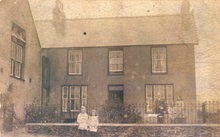

Yr Ysgol
Prifathro’r 1920au, Hugh Griffiths a’I deulu o flaen Tŷ’r Ysgol
Mewn cyfarfod cyhoeddus a gynhaliwyd yng nghapel Llithfaen ar y 30 Ebrill 1867 fe benderfynwyd sefydlu ysgol ddyddiol yn y gymdogaeth. Gan mlynedd yn ddiweddarach rhoddwyd rhybudd i gau yr Ysgol ym mis Mai 1966. Pan gaewyd yr Ysgol roedd 20 o ddisgyblion ynddi. Yn 1920/21 pan oedd yr Ysgol yn ei hanterth roedd 190 o ddisgyblion ar y llyfrau a 4 athro yn cael eu cyflogi –Hugh Griffiths yn brifathro, A.M. Roberts, Gwen Jones a J.E. Edwards yn athrawon.
Ffeithiau'r Cyfrifiad:
Plant hŷn Ysgol Llithfaen, tua 1885 (Ffotograffydd: John Thomas) Llyfrgell Genedlaethol Cymru